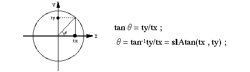

Return to previous page | Return to menu | Go to next page
ANGLE
Arithmetic functions
Return angle in specified direction
ANGLE slAtan(tx , ty)
FIXED tx ;
FIXED ty ;
tx X component of direction specification vector ty Y component of direction specification vector
Returns the angle in the specified direction.
Returns the corner value in the specified direction.
The figure below explains the principle of calculating the angular value of the function “slAtan”.

Reference: Chapter 11 Arithmetic Functions
slAtan